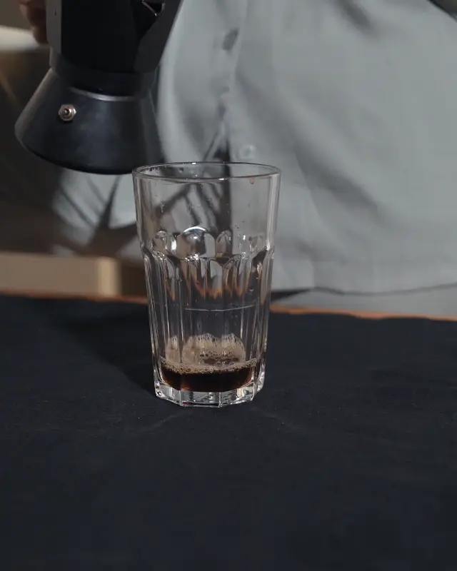
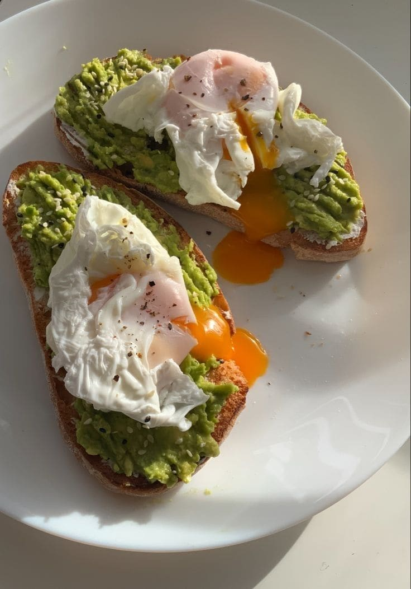
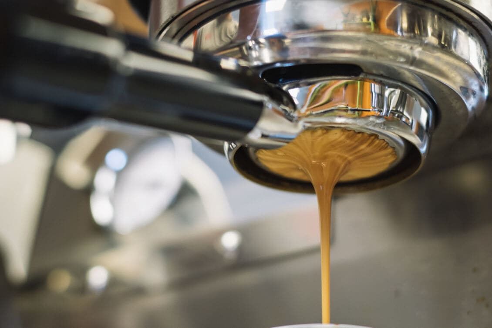
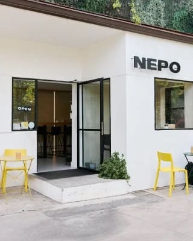
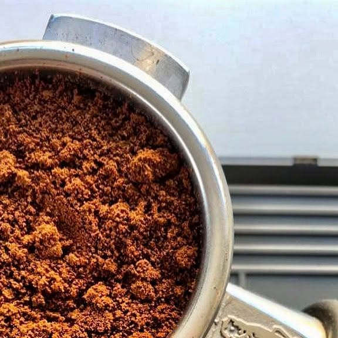
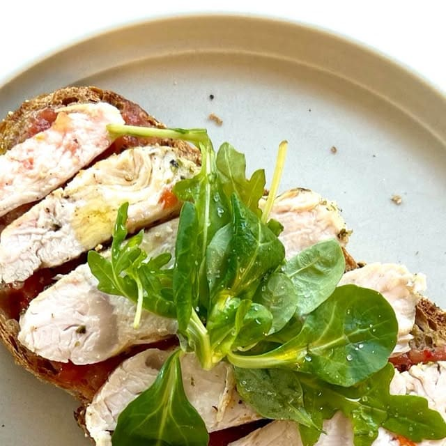
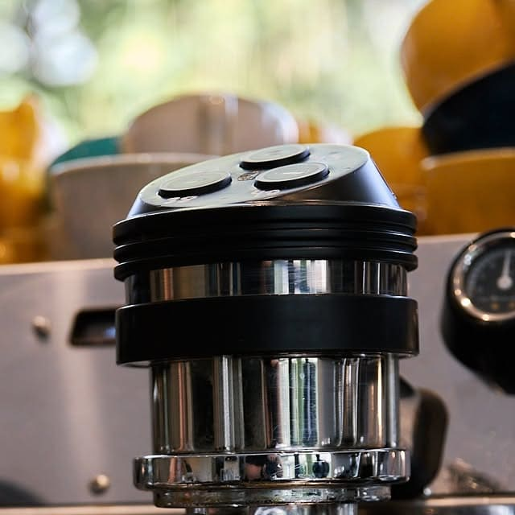

Pozuelo de AlarcónSpecialty Coffee
Pozuelo Coffee House Cafetería de especialidad en Pozuelo de Alarcón
Un momento analógico en un mundo con prisas. Cafés especiales, tostadas brutales y bollería casera.

-
01
Origen y tueste ético
Cuidamos cada detalle en la recogida, el proceso y el tostado del grano.
-
02
Extracción precisa
No es espuma. Es textura. Leche tratada con precisión.
-
03
Tu momento analógico en Pozuelo
Una experiencia única y efímera. Disfrútala despacio.
Nueva carta, nuevo horario, cada día mejor.
Pozuelo Coffee House
Pasa, siéntate
-

La carta
Cafés de especialidad, té y matcha, tostadas de masa madre y brioche hecho en casa, con precios.
-

Nosotros
Tres pilares, una taza: café de origen y tueste ético, el momento NEPO y la cultura del café.
-

Visítanos
Avenida Juan XXIII, 19, en Pozuelo de Alarcón. Abrimos todos los días desde las 7:30.
Comunidad · @nepo.cafe
Lo que pasa en la barra






Avenida Juan XXIII, 19
28224 Pozuelo de Alarcón · Lun–vie 07:30–19:30 · Sáb 08:00–19:30 · Dom 08:00–15:00